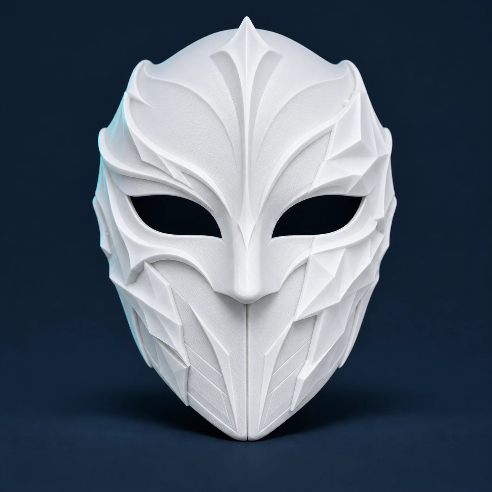

Poollicht
Kies wit om zelf te verven, één gewenste kleur of een volledig handbeschilderde uitvoering met meerdere kleuren en details.

Kies wit om zelf te verven, één gewenste kleur of een volledig handbeschilderde uitvoering met meerdere kleuren en details.